Empowering Workflows with Agent Builder
This case study details how we built Agent Builder to unlock a critical AI adoption barrier at Sense HQ.
Sense HQ is an AI-powered talent engagement platform used by enterprises and staffing agencies to automate hiring, from candidate discovery and screening to long-term nurturing.
- Role
- Lead Product Designer
- Responsibilities
- Led design from 0 → 1: discovery, strategy, end-to-end UX/UI, AI design system, and cross-pillar design language.
- Collaborators
- 4 Product Managers (AI Agent Builder, Workflows, Discover and Voice/Video AI), UX Research, Design System, Data Science and Engineering
- Timeline
- 4 months, kickoff to pilot launch
- Impact
- AI adoption 38% → 66% · Engagement 44% → 71% · 15 hrs saved per recruiter, every week
This is our Workflow Builder, our core platform that helps recruiters automate the whole hiring lifecycle: sourcing, screening, evaluation, messaging and voice interviews.
Genuinely capable product, but it demanded a lot of manual effort and time
We added multiple AI features like Voice AI screening and automated reach-outs, but product adoption and hiring outcomes started to decline.
The data showed decline. Nothing showed why.
Adoption, manual time, and hiring velocity were all tracked at the outcome level.
I worked with our data analytics team to instrument the setup flow and answer three questions:
- Where in the setup flow do recruiters stop?
- How long does one workflow actually take to build?
- Is the drop-off spread evenly, or concentrated at specific modules?
They weren't rejecting automation. They were abandoning it mid-setup.
Ran 18 months of support tickets through Claude to cluster by theme, then joined Clarity session data and Amplitude funnels into one view.
Overall data said setup, not output quality — the opposite of what the team assumed.
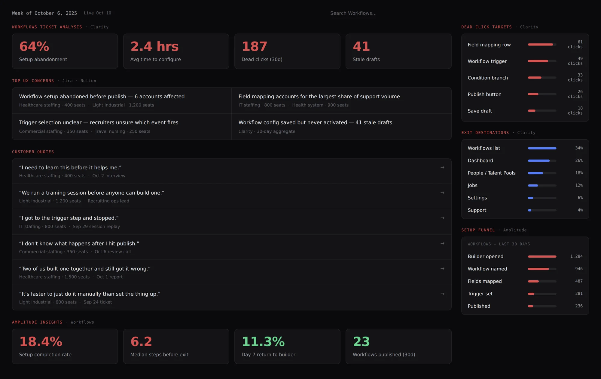
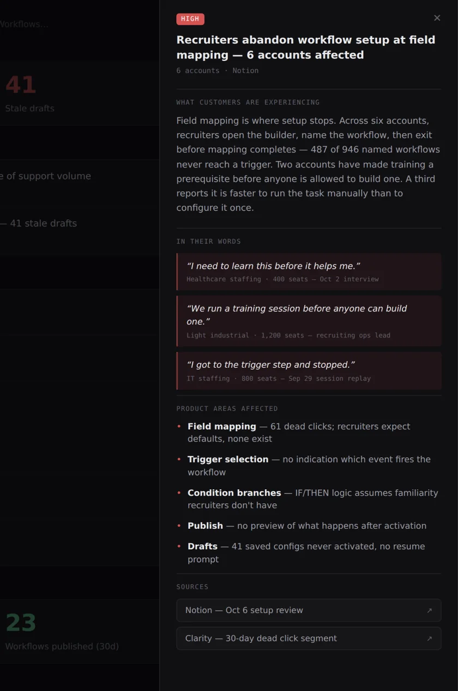
12 User Interviews • 48 Accounts Survey
"I need to learn this before it helps me."
Healthcare staffing · 400 seats"It's faster to just do it manually than set the thing up."
Light industrial · 600 seats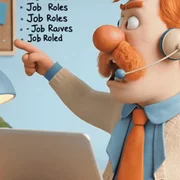
Create workflows → Map fields →Configure rules → Select triggers
I presented the research — where users were stopping, why they stopped, and what it had cost us.
Stakeholders, Product Leadership & Engineering Leadership
Two days of hands-on work followed — requirements, concepts, feature scope, and timeline.
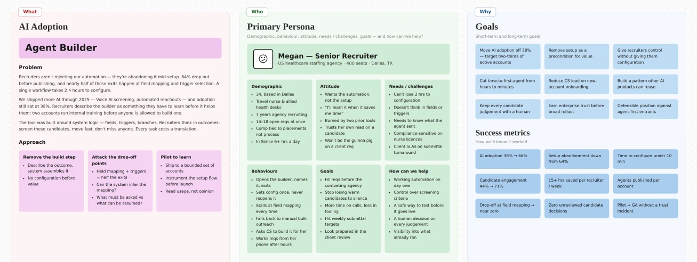
We built for system logic, not recruiter logic.
Recruiters think in outcomes, not steps — "screen these candidates," "move fast," "don't miss anyone."
That gap forced manual configuration on every task, which created cognitive load and eroded trust before value ever landed.
AI adoption didn't fail because the AI was wrong. It failed because it demanded effort before it proved value.
Hiring outcomes, without thinking in workflows.
Recruiters would describe what they wanted. The system would handle everything underneath — fields, triggers, branches, sequencing.
Build the automation, then get the outcome
Describe the tasks, the system builds the automation
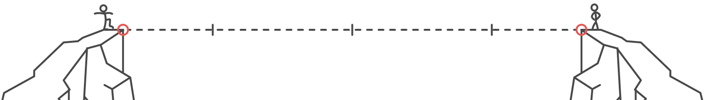
Pilot launch with 70 enterprise customers
Full-fledged launch
First few design bets
I pushed multiple prototypes through Lovable to bring the concept to life.
I played with different variants, prioritising aspects like speed, transparency and control in building hiring flows.
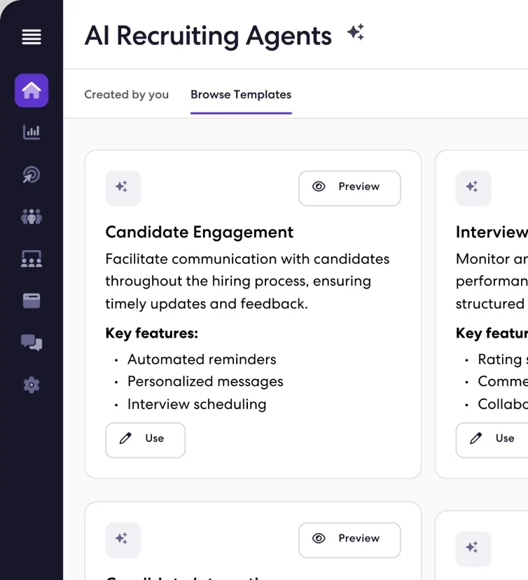
I bet that transparency would earn trust.
If the system was going to build the automation, recruiters needed to see what it was doing.
So V1 exposed everything — every control, every agent decision, every customization path.
Transparency › Control › Speed
✦ V1 prototypeI was wrong. Transparency didn't build trust — it built overhead.
"It's just another system to manage."
Recruiting Ops Lead - Corporate"I want to set it up once and forget about it."
Recruiter - Staffing AgencyThree questions I couldn't answer with a better assistant.
- What if recruiters never had to build workflows at all?
- What if intent alone was enough for AI to act?
- What if AI stopped assisting and started owning outcomes?
V1 Assistants → Agents
V1 didn't fail because the AI was wrong. It failed because it was complex to understand.
So, I removed workflows entirely
No upfront setup. No configuration before value. Describe the outcome, the agent builds and runs it.
Recruiters would see value in the first session. Adoption would follow.
Speed › Transparency › Control
✦ V2 prototypePushbacks from three directions.
- Product →
- We would need enterprise control
- Engineering →
- Flagged black-box behaviour
- Leadership →
- Feared trust could affect adoption
Every objection pointed back toward more visibility and control — the thing V1 had already proved didn't work.
I owned two critical design decisions
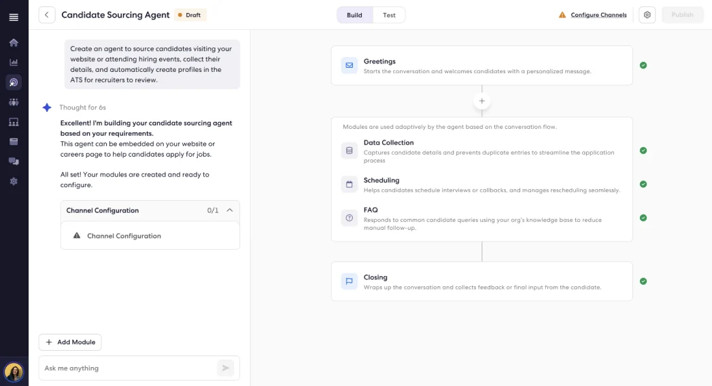
1. Show only key modules, and they come configured. Recruiters approve or change only what matters.
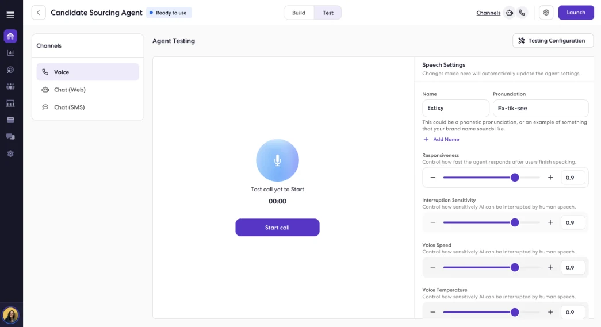
2. I introduced a simulator environment (Test). Users run the agent in real-time scenarios and make changes wherever necessary.
The same room that wanted V1 back signed this off.
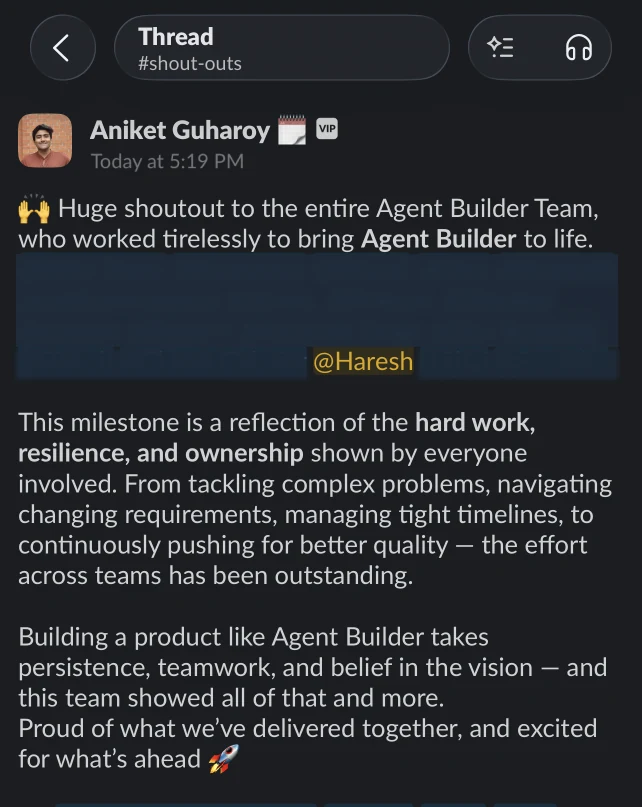
Adoption nearly doubled.
Within 4 months of launch, across 200 enterprise accounts.
per recruiter
every week
Based on metrics from the Q1 product town hall
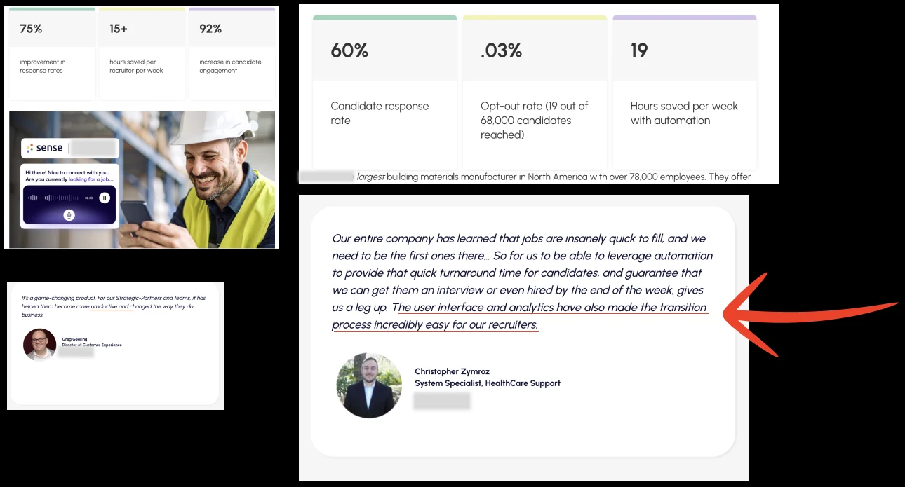
Agent Builder became the architecture for two more successful products.
AI Interviewer - Video interviews with identity verification and first-round screening — a step beyond voice.
AI Receptionist - An inbound call agent that answers candidate queries without a recruiter picking up.
Keep cutting it down to MLP
I was laser-focused on shipping a minimum lovable product, and that meant V1 reached real recruiters in weeks, not quarters. What they touched and ignored became the platform for everything after.
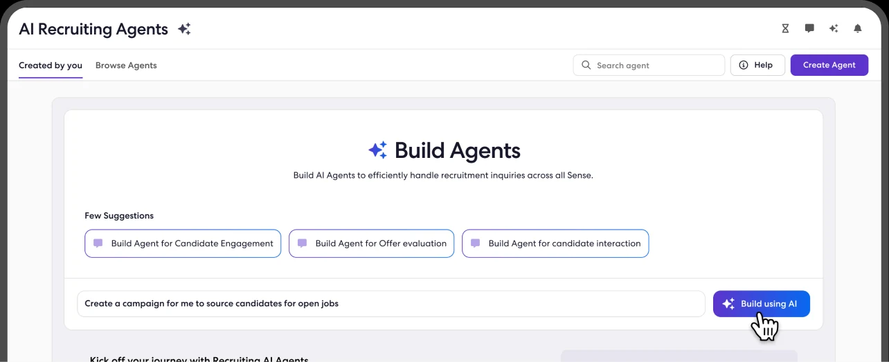
Interaction documents are not contextual
I noticed my engineers sometimes missed specific design details even though they were in the interaction document, so I introduced contextual screen-level annotations that gave engineers clearer, in-context guidance beyond static interaction documentation.
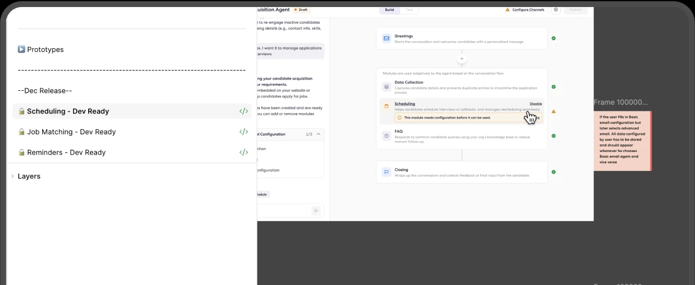